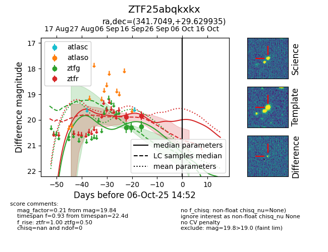
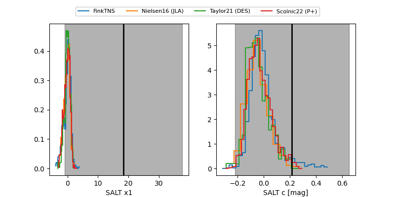

FINK: ZTF25abqkxkx
Lasair: ZTF25abqkxkx
ALeRCE: ZTF25abqkxkx
ZTF25abqkxkx (ztf,fink)
equatorial (ra, dec) = (341.7049,+29.62993)
galactic (l, b) = (92.9414,-25.88711)


last ztfg=20.25, ztfr=19.84
3 ztfg, 2 ztfr detections